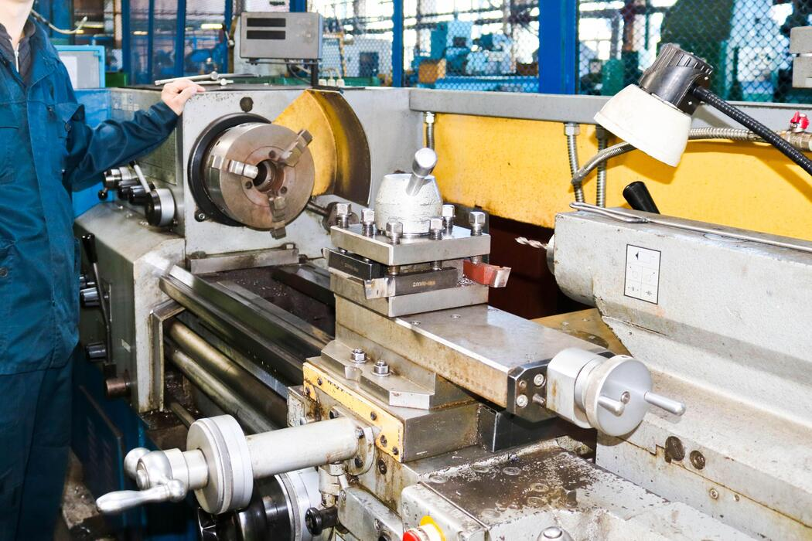

Verificación de estanqueidad, seguridad y desempeño en condiciones reales de operación.
Las pruebas de fuga son esenciales para garantizar que las válvulas y componentes industriales operen de manera segura y confiable. En Tecno Compresión SAS realizamos ensayos controlados bajo estándares técnicos rigurosos.

Reducción de riesgos durante la operación.
Componentes verificados antes de su instalación.
Ensayos alineados a normas industriales.
Verificamos cada componente antes de su puesta en servicio.
Contáctanos